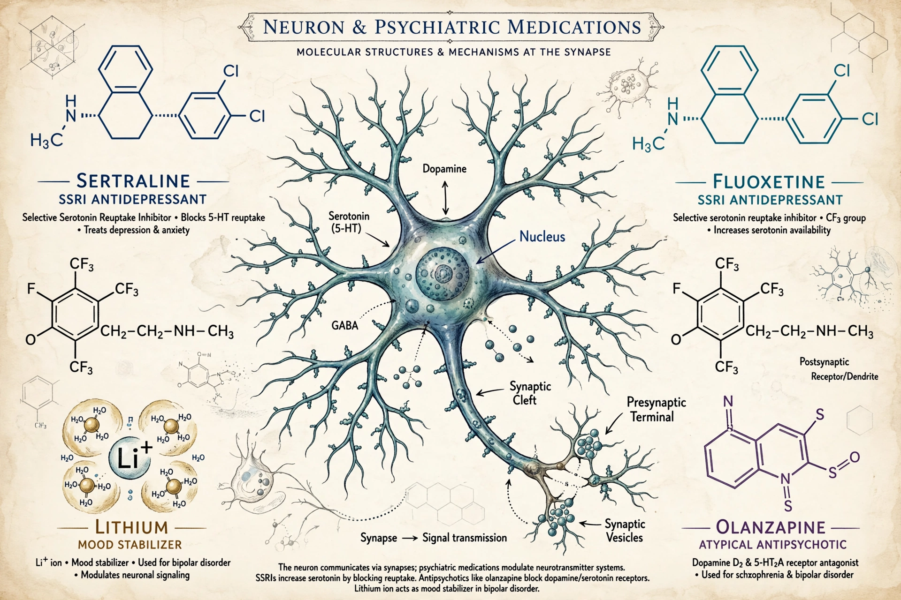

| Field | Pharmacology, psychiatry, neuroscience |
|---|---|
| Focus | Effects of drugs on mood, sensation, thinking and behaviour |
| Major drug classes | Antidepressants, antipsychotics, anxiolytics, mood stabilisers, stimulants, psychedelics |
| Key systems | Serotonin, dopamine, norepinephrine, GABA, glutamate |

Psychopharmacology is the scientific study of the effects drugs have on mood, sensation, thinking, behaviour and cognition. It is distinguished from neuropsychopharmacology, which emphasises the nervous-system mechanisms of drug action. The field underpins modern psychiatric treatment: most medications prescribed for mental disorders were developed and are evaluated within its framework.
The modern era began in the early 1950s with a series of serendipitous discoveries: chlorpromazine (1952), the first effective antipsychotic; iproniazid and imipramine, the first antidepressants; and lithium's antimanic effect, described by John Cade in 1949. Benzodiazepines followed in the 1960s, and the selective serotonin reuptake inhibitors (SSRIs), led by fluoxetine (Prozac) in the late 1980s, reshaped the treatment of depression and anxiety. These discoveries generated influential theories of mental illness, including the dopamine hypothesis of schizophrenia and the monoamine hypothesis of depression.
Psychopharmacology combines receptor-binding studies, animal behavioural models, human experimental medicine and randomised controlled trials. Pharmacokinetics (how the body handles a drug) and pharmacodynamics (how the drug affects the body) together determine dosing, efficacy and adverse effects.